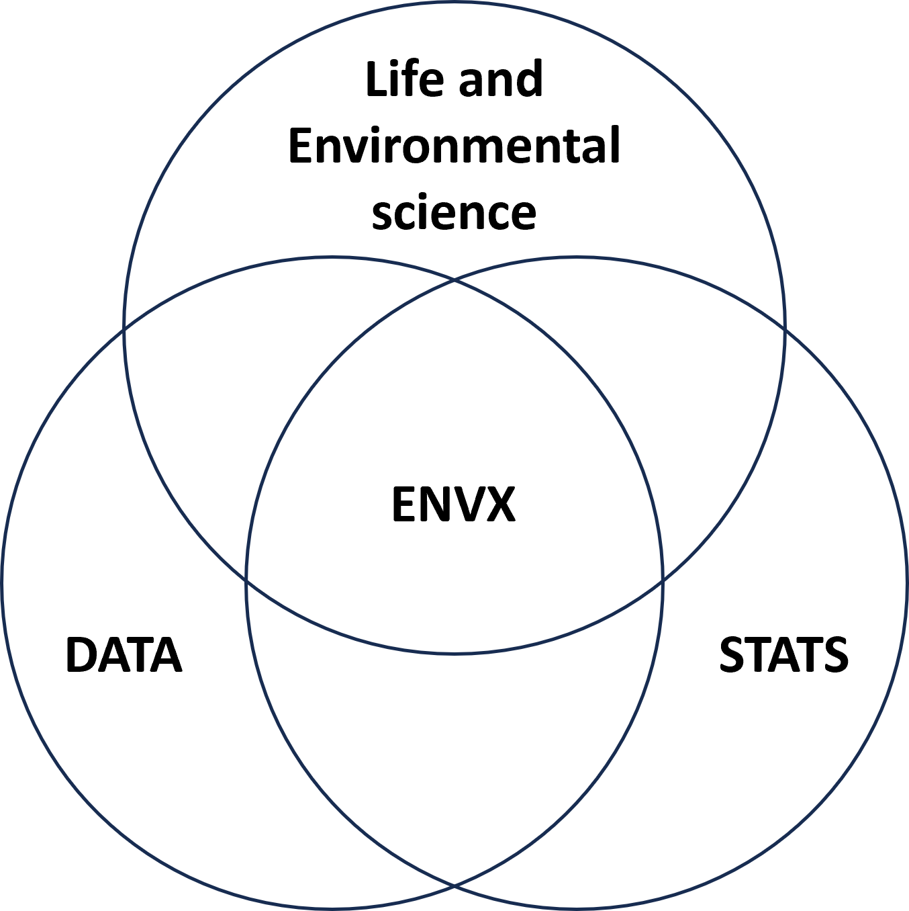
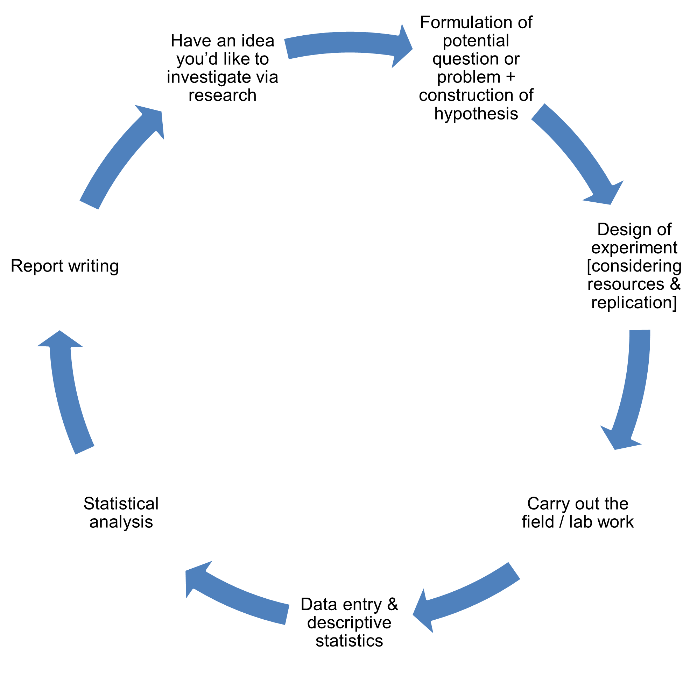
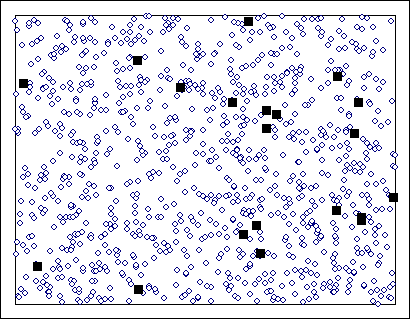
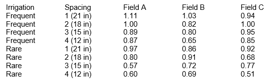

Introduction
What is ENVX?
A practical definition of ENVX is “The use of statistical and computing methods to answer quantitative biological questions.”
It sits at the interface of applied statistics, data science and life and environmental sciences. It is a field that is growing rapidly in importance as the amount of data being collected in the biological and environmental sciences increases.

Introduction to Research
You will soon learn that the University of Sydney has a great tradition in research (with many of our efforts earning international recognition). Your teachers will include some experiences of or findings from their research in their classes, and you will have an opportunity to participate in research projects throughout your degree. ENVX comprises of three vertically integrated units designed to equip you to confidently approach the design and data analysis aspects of your research. The diagram below shows one view of the process of research (or experimentation).

The Use of Statistics in Research
Statistics provides us with an avenue for exploring and reporting the findings of the research. In terms of reporting, it allows us to give a measure (generally a probability) of the extent to which our conclusion could be wrong. Statistics is a means of informing the decision-making process.
Data
Data is the information we collect on the subjects, factors and variables we are interested in studying. Data may be textual (i.e. words) or numerical.
Observations, samples and populations
Populations may be real and therefore able to be listed e.g. all veterinarian practices in the Sydney region. They may be hypothetical and unable to all be listed e.g. all dogs possible that could have a particular treatment applied to them.
Each sampling unit (or observation) in the population (e.g. plot of land, animal, etc.) has a value y (e.g. nematode count, gestational length): \(y_1,y_2,y_3,...y_N\). Typically the population size (N) is very large - even infinite! The population can be described by population parameters e.g. population mean = \(\mu\), population variance = \(\sigma^2\). These are generally characters from the Greek alphabet. Since populations are large, we usually cannot determine these values exactly.
Often we wish to make generalisations about populations that are too large or too difficult to survey completely. In these cases we sample the population and use characteristics of the sample to extrapolate to characteristics of the larger population. We can define a sample (of size n) as drawn from population “at random”. We call each piece of information recorded about a sampling unit or subject (e.g. plant, person, animal, 1x1m plot of land) an observation.

The sample is taken to be representative of the population – but there are no guarantees! It is easier/quicker/cheaper to take a sample than study the entire population (since n << N). The results obtained from the sample not important in themselves - the importance is in how it can be used to estimate population parameters i.e. \(\bar{y}\) estimates \(\mu\); \(s^2\) estimates \(\sigma^2\).
Example: For a sample of \(n = 10\) cows, gestation length in cattle was measured in days. The sample mean \(\bar{y} = 345\) days estimates the population mean \(\mu = ???\) days. The sample standard deviation \(s = 10\) days estimates population standard deviation \(\sigma = ???\) days.
Variables (types of data)
The table below shows fresh weights of cabbages that were included in a field trial that was investigating the effects of irrigation frequency and plant spacing on cabbage yields. This fresh weight measurement is on a continuous scale.
Generally in an experiment, several different characteristics of the subjects are measured/recorded. We may score the level of insect damage to leaves of the plant on a scale of 0 to 3 (0 = no damage, 1 = slight damage, 2 = moderate damage, 3 = heavy damage). This is a discrete categorical scale as only certain values on the scale are defined, but it is also an ordered scale. If we had difficulty deciding how to categorize plants using this scale, we might choose to classify plants as either damaged or not damaged, which is a binary measurement scale.
Already you can begin to see that from just one fairly simple field trial quite a lot of data can be generated, also data of differing properties/types.

Data may also be classified as either quantitative (e.g. root length) or qualitative (e.g. plant species). Quantitative observations are based on some sort of measurement e.g. length, weight, temperature, pH. Qualitative observations are based on categories reflecting a quality or characteristic of the observed event e.g. male vs. female, diseased vs. healthy, mutant vs. wild type.
The most common types of variables are:
- Continuous (and interval) data can assume any value in some (possible unbounded) interval of real numbers. Examples are length, weight, temperature, volume, height.
- Discrete variables assume only isolated values. E.g. trees per hectare, items per quadrat, number of diseased plants in a section of a glasshouse. They arise from counting – usually either the number of successes in n trials (binary data) OR the number of occurrences of the event in an interval of time or space (count data).
- Categorical variables
- Binary variables (listed above as discrete variables) may also be thought of as categorical variables since the subject falls into either of 2 mutually exclusive categories (yes/no, alive/dead, diseased/not diseased etc.).
- Ordinal variables are not measured but nevertheless have a natural ordering. E.g. candidates for political office can be ranked by individual voters. The rank values have no inherent meaning outside the “order” that they provide. That is, a candidate ranked 2 is not twice as preferable as the person ranked 1. (Compare this with measurement variables where a plant 2 feet tall is twice as tall as a plant1 foot tall. With measurement variables such ratios are meaningful, while with ordinal variables they are not.)
- Nominal data is qualitative data. Some examples are species, gender, genotype, phenotype, healthy/diseased. Unlike ranked data, there is no “natural” ordering that can be assigned to these categories.
Note that some applied statistics texts will define the types of data slightly differently to that shown above.
In this unit of study most emphasis will be on the analysis of continuous measurement variables. However a few basic analyses for discrete and categorical variables will be covered.
Recognising the type of data we have measured is REALLY important as it helps to determine the choice of analysis (and even the descriptive statistics we undertake e.g. the mean of a score doesn’t make sense, but the median is a good alternative measure of central tendency).
Relationships between variables
Sometimes you will want to explore the relationship between two (or more) variables that you have measured in your research. You will explore the strength of the relationship and the nature of it (e.g. linear, exponential etc.).
In the most simple case, we examine the amount of variability in one variable (Y, the dependent variable) that is explained by changes in another variable (X, the independent variable). Often the X variable is called the predictor and the Y variable the response.
Biological and Environmental Variability
Variation is the norm. It occurs in both observational studies as well as designed experiments. For example, river flow varies from sampling time to sampling time and from sampling location to sampling location. Also, levels of soil contamination on a site vary from site to site.
This type of variation distinguishes the biological and environmental sciences from the physical sciences, which shows relatively little variability:
- Dropping a ball from a certain height: the time to reach the ground is (nearly) identical each time;
- Amount of a chemical product produced when reagents are mixed are (nearly) identical and predictable.
Biological data is far more variable due to environmental and genetic effects. To interpret biological data, we need to control variation by an appropriate experimental design, and adjust for variation by means of statistical analyses.
Statistical distributions
We use statistical distributions to determine the probability of occurrence of our particular sets of observations. A statistical distribution is a representation (using either mathematical formula or a table) of all possible outcomes of a given event. The most well-known distribution is the normal (or Gaussian) distribution for which the probability distribution function is the familiar bell-shaped curve.
Sampling
The aim of sampling is to gain a representative picture of the population. There are various methods and strategies for doing this. Experimental groups/samples must be constructed without bias and must be large enough to give the researcher an acceptable level of confidence in the results.
Hypotheses
A hypothesis is a tentative explanation for the initial or ad hoc observations made. It suggests a cause and effect or associative relationship that is testable, e.g. yield response to nitrogen (N) fertilizer. The purpose and design of an experiment is to test the hypothesis.
Statistical tests
We decide whether or not a research outcome if significant by conducting a statistical test. Firstly we set arbitrary critical thresholds of probability (P-values). The occurrence of an event whose estimated probability is less than a critical threshold is regarded as a statistically significant outcome. The usual significance level chosen is P<0.05. You will also see P<0.01 and P<0.001 used in research literature. Which statistical test you use (there are many!) depends on the type of data you have collected and the question you wish to ask.
Software
In this unit of study, we will focus on the use of one statistical package called R. It has been designed specifically for statistical analysis and is freely available. It is a powerful tool for data analysis and is widely used in the biological and environmental sciences.
You will also learn to use Microsoft Excel to organize and summarise your data. In the next section some of the basic features of Excel are presented. See computer lab 1.